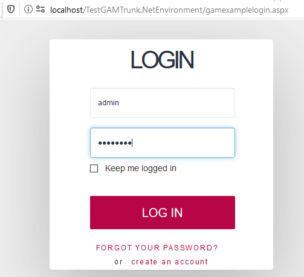
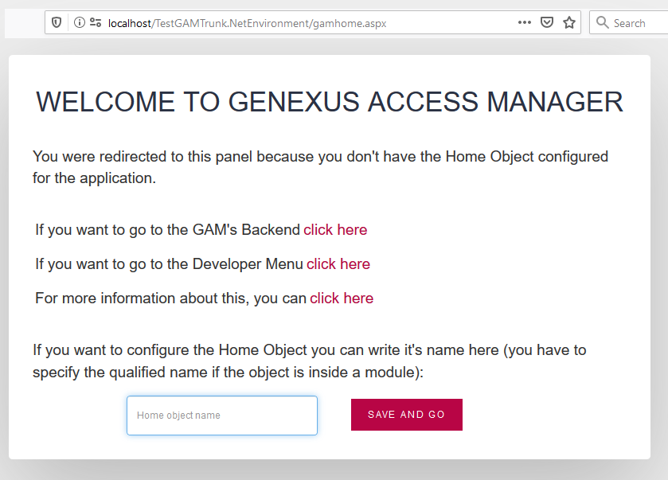

The GAM Web Front-end examples are imported into the Knowledge Base when Enable Integrated Security property is set.
"gamexamplelogin" is the sample object which allows the user to log in, and is executed automatically when there is no valid session.
When you execute the gamexamplelogin for the first time, you have to take some aspects into consideration.
If you execute this object (or the gamhome object, which will redirect to the gamexamplelogin if you are not logged in), you will be asked to configure a Home Object for your application.
First, you will be asked to enter your credentials in gamexamplelogin:

Then, the gamhome object is executed, where you are asked to enter the Home Object:

The purpose of configuring a Home object is to set, in the GAM database, what the object to return is when there isn't any caller of the gamexamplelogin. Basically, if A is executed and needs authentication, the execution flow returns to A after a successful login. But if the gamexamplelogin has no object to redirect, a Home Object is needed to end the execution flow.
| Backlinks | |
| Category:GAM - Web Backoffice | Toc:GeneXus Access Manager (GAM) |